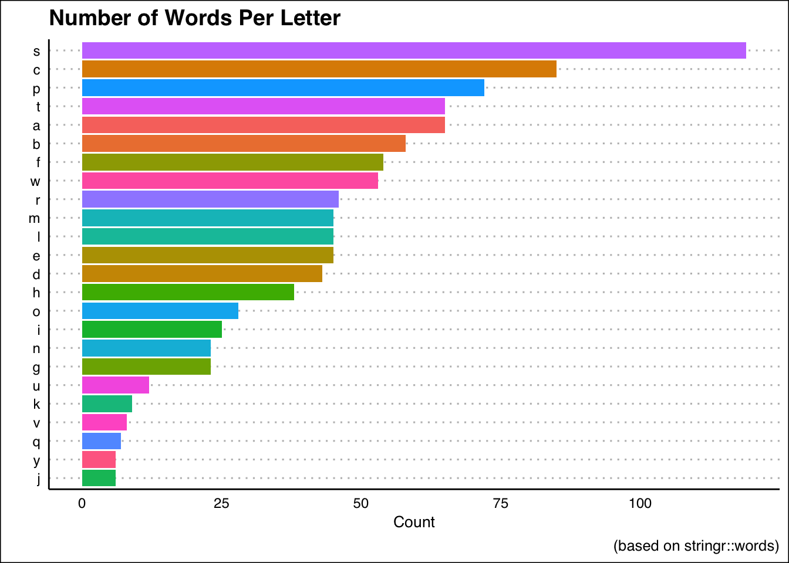
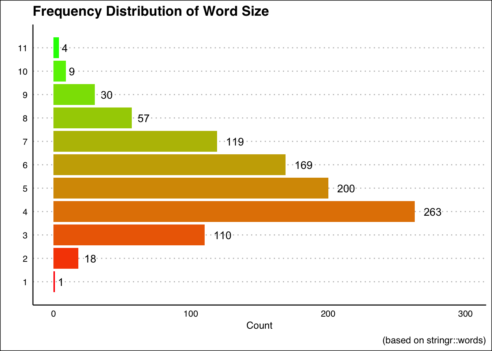
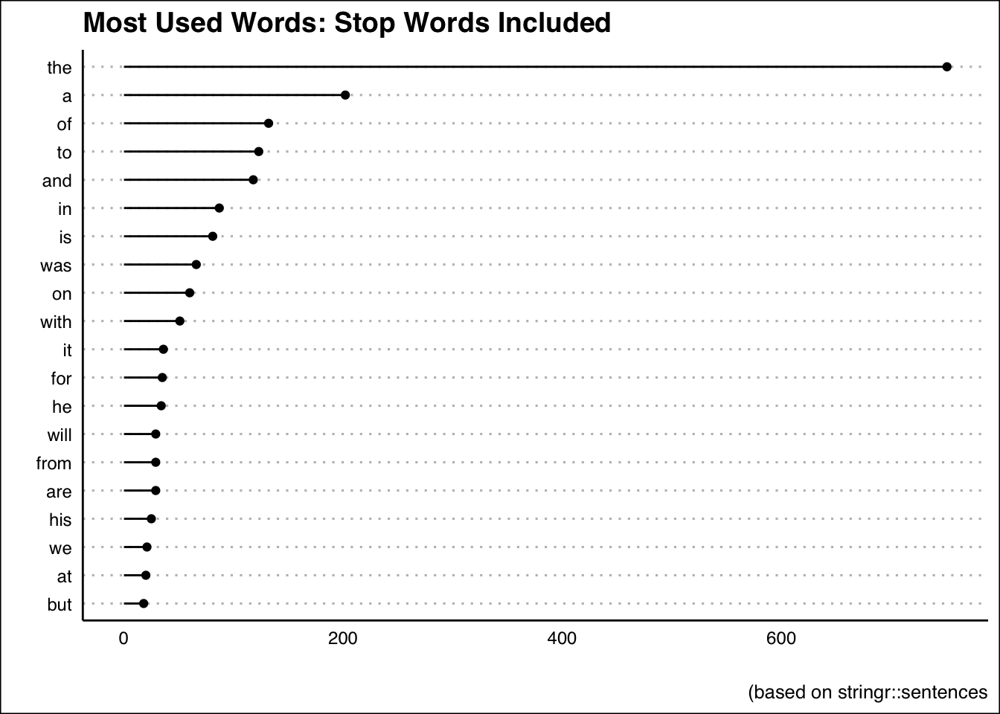
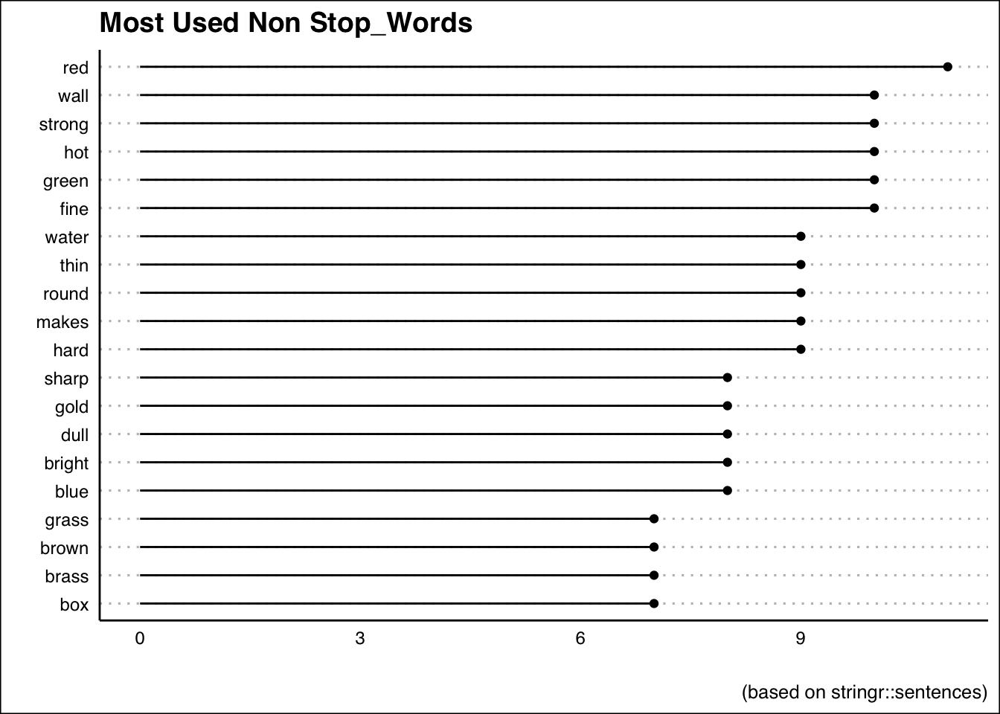

Usingdplyr and the stringr::words package, we can demonstrate how to extract information from a dataset. Before we get into anything, let us take a look at a few of the characteristics of the stringr::words dataset.
head(stringr::words)[1] "a" "able" "about" "absolute" "accept" "account" summary(stringr::words) Length Class Mode
980 character character A dataset with 980 words seems like a great tool to have!
str_match_all we can enter a regualr expression that will see match words that only have five characters.five_letter <- str_match_all(words,"\\w{5}")
head(five_letter)[[1]]
[,1]
[[2]]
[,1]
[[3]]
[,1]
[1,] "about"
[[4]]
[,1]
[1,] "absol"
[[5]]
[,1]
[1,] "accep"
[[6]]
[,1]
[1,] "accou"Here we encounter two errors:
We will need to use unlist() and \\b in order to fix this.
five_letter_fixed <- unlist(str_match_all(words,
"\\b\\w{5}\\b"))
head(five_letter_fixed)[1] "about" "admit" "after" "again" "agent" "agree"The regular expression here does the following:
\\b represents a boundary character. This tells R to look for something to be followed by a space and finished before a space.\\w tells R to look for a word-character.{5} tells R to look for a word-character that has a length of exactly 5.\\b lookd for the second boundary.Here we will use a regular expression that looks for where words start with specific letters.
vowel_words <- unlist(str_match_all(words,"^[aeiou].*$"))
sample(vowel_words,10) [1] "in" "unite" "apply" "out" "odd" "explain"
[7] "especial" "include" "indeed" "one" Great!
The regular expression does the following:
\\b - Looks for boundary^ - Designates the start of a string.[aeiou] - Matches the start of the string that is either a,e,i,o,or u.. - Looks for any character that follows the first match.* - Looks for an unlimited number of matches until it is told to stop.$ - Tells R to look for the end of a string.stringr::wordsWe will need to make stringr::words into a dataframe using tibble().
We need the data in a dataframe so that we can use the different functions in dplyr package.
We use the %>% operator that takes the value on the left and passes it throuh to the right.
word_tbl <- tibble(line=1:length(words),words=words)
summary(word_tbl) line words
Min. : 1.0 Length:980
1st Qu.:245.8 Class :character
Median :490.5 Mode :character
Mean :490.5
3rd Qu.:735.2
Max. :980.0 word_tbl %>%
# Create a column of the letter the word starts with
mutate(sw=unlist(str_match_all(words,"^."))) %>%
# Group by that new column. Any change we make will be in accordance with this column.
group_by(sw) %>%
# We will use the tally function to count how many observations fall into each category.
tally()# A tibble: 25 x 2
sw n
<chr> <int>
1 a 65
2 b 58
3 c 83
4 C 2
5 d 43
6 e 45
7 f 54
8 g 23
9 h 38
10 i 25
# … with 15 more rowsTaking a look at the table we can see that there are two words that start with a capital C. This doesn’t halt the process, but it is worth it to see who the culprits are.
word_tbl %>%
mutate(sw=unlist(str_match_all(words,"^."))) %>%
filter(sw=="C")# A tibble: 2 x 3
line words sw
<int> <chr> <chr>
1 150 Christ C
2 151 Christmas C For our purposes, it is more than okay to change these entries to be lowercase. Conveniently, the stringr package really does have it all!
words <- str_to_lower(words)
word_tbl <- tibble(line=1:length(words),words=words)
word_tbl <- word_tbl %>%
# Create a column of the letter the word starts with
mutate(sw=unlist(str_match_all(words,"^."))) %>%
# Group by that new column. Any change we make will be in accordance with this column.
group_by(sw) %>%
# We will use the tally function to count how many observations fall into each category.
tally()We could look at the table and make some observations, but it would be better to just graph everything!
Keep in mind that this list of words is only 980 observations long so there are plenty of missing words. With that being said, what letter is represented the most in the stringr::words vector?
word_tbl %>%
ggplot(aes(fct_reorder(sw,n),n,fill=sw)) +
geom_bar(stat="identity") +
coord_flip() +
labs(x="",y="Count",
title="Number of Words Per Letter",
caption="(based on stringr::words)") +
theme_clean() +
theme(axis.ticks = element_blank(),
legend.position = "none") 
For example, here is a quick way to create a vector of words and getting their length:
library(stringr)
# Take a sample of 10 observations from the words package
sample_words <- sample(words,10)
# Find the length of each word
str_length(sample_words) [1] 4 6 6 3 6 4 4 4 9 9Using this same approach we could find out the number of each letter-sized word in the package.
# X-Axis Values for later
xax <- 1:11
# Create a dataframe to use
words_t <- tibble(line=1:length(words),words=words)
# Create a column with the lengths of the words
words_t <- words_t %>%
mutate(string_length=str_length(words)) %>%
group_by(string_length) %>%
tally() # Plot the frequencies, flip the coordinates
# use our custom axis labels, remove axis ticks,
# plot the frequencies on the plot
# label the axes
words_t %>%
ggplot(aes(string_length,n,fill=string_length)) +
geom_col() +
coord_flip() +
labs(x="Length of Word") +
scale_x_continuous(breaks=xax) +
theme_clean() +
theme(legend.position = "none",
axis.ticks = element_blank())+
scale_fill_gradient(low="red",high="green") +
geom_text(aes(label=n, hjust=-.5))+
ylim(0,300) +
labs(x="",
y="Count",
title="Frequency Distribution of Word Size",
caption="(based on stringr::words)")
sentences_t <- tibble(line=1:length(sentences),sentence=sentences)
sentences_t_ns <- sentences_t %>%
unnest_tokens(word,sentence) %>%
group_by(word) %>%
count(sort=T) %>%
ungroup() %>%
slice(1:20)
sentences_t_ns %>%
ggplot(aes(fct_reorder(word,n),n)) +
geom_point() +
geom_segment(aes(word,xend=word,n,yend=0)) +
coord_flip() +
theme_clean() +
theme(axis.ticks = element_blank(),) +
labs(x="",y="",
title="Most Used Words: Stop Words Included",
caption="(based on stringr::sentences")
sentences_t_s <- sentences_t %>%
unnest_tokens(word,sentence) %>%
anti_join(stop_words) %>%
group_by(word) %>%
count(sort=T) %>%
ungroup() %>%
slice(1:20) Joining, by = "word"sentences_t_s <- sentences_t_s %>%
ggplot(aes(fct_reorder(word,n),n)) +
geom_point() +
geom_segment(aes(word,xend=word,n,yend=0)) +
coord_flip() +
theme_clean() +
theme(axis.ticks = element_blank(),) +
labs(x="",y="",
title="Most Used Non Stop_Words",
caption="(based on stringr::sentences)")
sentences_t_s
I actually can’t think of too many things to utilize the fruits dataset, but maybe…
How many fruits end in ‘berry’?
berry <- unlist(str_match_all(fruit,".*erry$"))
berry [1] "bilberry" "blackberry" "blueberry" "boysenberry" "cherry"
[6] "cloudberry" "cranberry" "elderberry" "goji berry" "gooseberry"
[11] "huckleberry" "mulberry" "raspberry" "salal berry" "strawberry" length(berry)[1] 15Copyright © 2019 David Brocker All rights reserved.